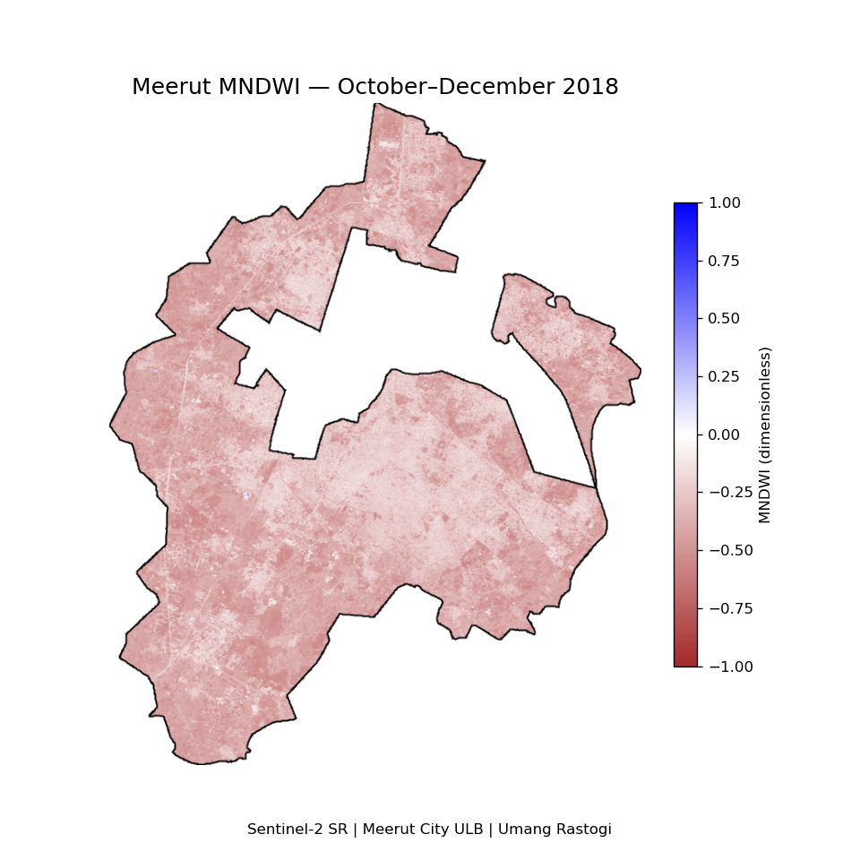
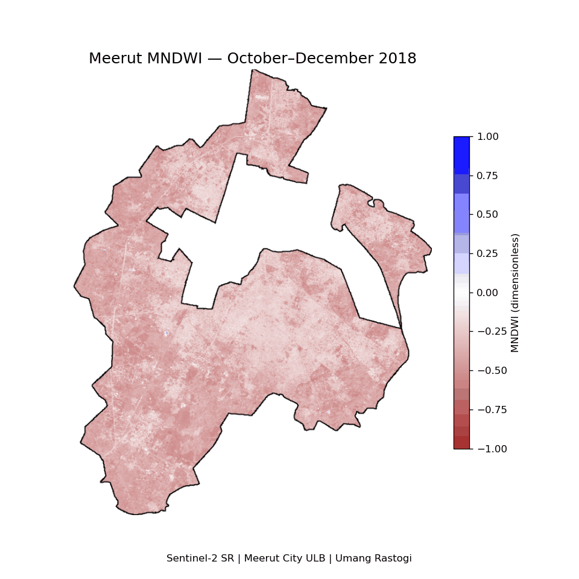
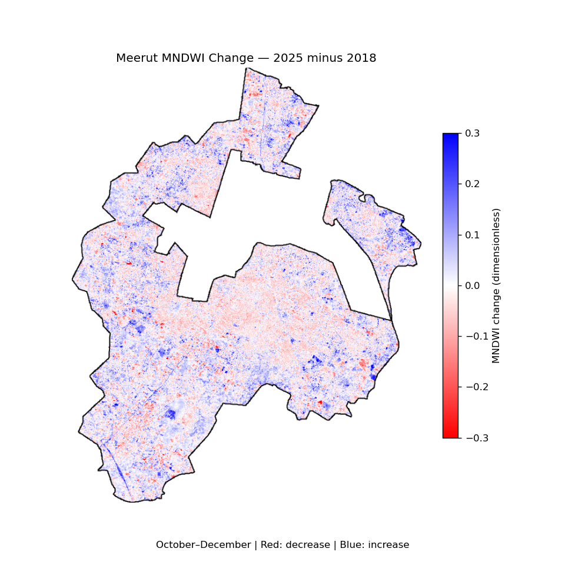
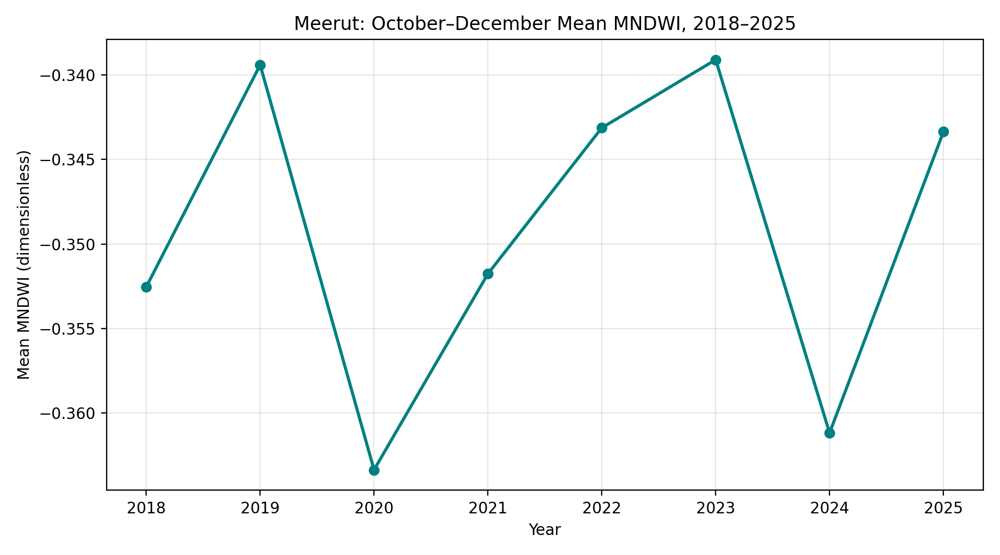

Umang Rastogi | HS25M113
HS524M — Question 2, Row 22
Sentinel-2 Surface Reflectance | October–December, 2018–2025
How did the surface-water spectral signal change within the Meerut City Urban Local Body between 2018 and 2025?
MNDWI = (B3 − B11) / (B3 + B11), where B3 is green and B11 is shortwave infrared. The index is dimensionless.
For each year, Sentinel-2 images were filtered to the Meerut City boundary and the October–December window. Scenes with cloudiness below 30% were retained. SCL-based masking removed no-data, defective, shadow, unclassified/cloud, cirrus and snow pixels. Reflectance was scaled by 0.0001, a median reflectance composite was created, and MNDWI was calculated.
All numerical comparisons used a common valid mask, a 20 m analysis scale and UTM Zone 43N. Common valid coverage was 100.0% when rounded. Annual maps use the same −1 to +1 colour scale.
Year: 2018



Blue indicates increased MNDWI; red indicates decreased MNDWI. The display range is −0.3 to +0.3; values beyond this range use the end colours.

| Year | Mean_MNDWI |
|---|---|
| 2018 | -0.352537 |
| 2019 | -0.339401 |
| 2020 | -0.363367 |
| 2021 | -0.351763 |
| 2022 | -0.343121 |
| 2023 | -0.339093 |
| 2024 | -0.361181 |
| 2025 | -0.343353 |
Mean MNDWI increased from −0.352537 in 2018 to −0.343353 in 2025, a difference of +0.009184. This represents a small increase in the city-wide surface-water spectral signal.
The annual values fluctuate rather than increasing steadily. The lowest annual mean occurred in 2020 (−0.363367), and the highest in 2023 (−0.339093). Negative city-wide means indicate that non-water surfaces dominate the aggregate signal; they do not imply an absence of individual water bodies.
The difference map shows the spatial distribution of increases and decreases. A city-wide mean can conceal opposing local changes. These results do not establish changes in actual water area, water quality or river restoration.
Boundary: MEERUT CITY, ULB code 800716, from Swachh Bharat Mission boundaries distributed through ramSeraph/DataMeet's Indian Urban Boundaries release.
Satellite data: ESA/Copernicus, COPERNICUS/S2_SR_HARMONIZED, accessed through Google Earth Engine.
Processing: Python, Earth Engine and geemap, following the workflow taught in Lectures 24–27.